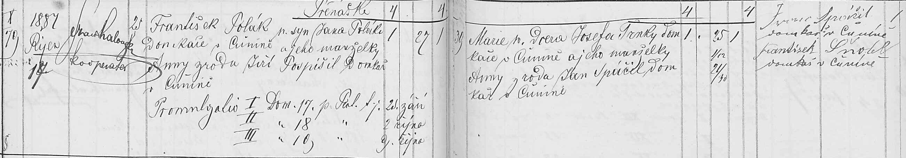

Zápisy z matrik · sňatek
Sňatek rodičů legionáře: František Polák a Marie Trnková
František Polák, domkář v Čuníně čp. 25, 27 let, syn Jana Poláka a Anny z rodu Jiřího Pospíšila, se oženil s Marií, 25 let a 7 měsíců, dcerou Josefa Trnky, domkáře v Čuníně, a Anny. Nevěsta z Čunína čp. 30. Rodiče budoucího legionáře Františka narozeného 4. 7. 1890; jejich totožnost a společné prarodiče spojuje i jeho křest. Další podrobnosti rodného příjmení matky nevěsty zůstávají k ověření.
| Datum | 17. 10. 1887 |
|---|---|
| Archiv | Moravský zemský archiv v Brně – Sbírka matrik (E 67), fara Konice |
| Svazek | O Konice 1873–1892, kniha 9104, oddíl Čunín |
| Snímek | 76 – otevřít na portálu Acta Publica |
| Týká se | František Polák1905–1983, Jan Polák1865–1943 |

Červeně je označené místo, ze kterého čteme. Kliknutím otevřete výřez v plném rozlišení.
Přepis originálu
Výběrový přepis: [Datum] 1887 Říjen 17 [Ženich] František Polák […] syn Jana Poláka Domkáře v Čuníně a jeho manželky Anny z rodu Jiří Pospíšil Domkář v Čuníně [Věk ženicha] 27 [Nevěsta] Marie […] dcera Josefa Trnky domkáře v Čuníně a jeho manželky Anny […] [Věk nevěsty] 25 7/12 Přepis nezahrnuje všechny sloupce; nejisté rodné příjmení Anny nebylo doplněno.
Překlad
17. října 1887 se vzali František Polák (27 let) a Marie Trnková (25 let a 7 měsíců). Ženichovi rodiče byli Jan Polák a Anna Pospíšilová. Nevěstin otec Josef Trnka, matka Anna. Marie se podle věku narodila přibližně roku 1862; přesné datum zatím nemáme.
Nejistá čtení jsou označená (?), nečitelná místa […]. Přepis si můžete ověřit na výřezu výše.